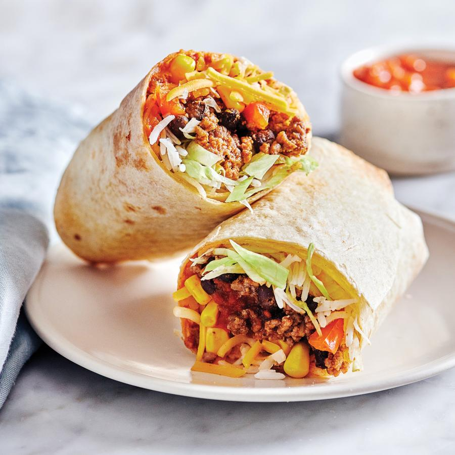

Burrito

Description
Burritos are the best. They're quick, they're easy, they're a complete meal contained
in a handy wrap. Flour tortillas are filled with a mixture of ground beef, refried
beans, and chiles then topped with a generous amount of sauce and cheese.
Ingredients
- 3 pounds pork butt roast with bone
- 1 medium onion, sliced
- 6 cloves garlic, chopped
- 2 (1.25 ounce) packages taco seasoning mix, divided
- 1 (16 ounce) can refried beans
- 1 (14.5 ounce) can diced tomatoes
- 1 (4 ounce) can chopped green chiles, or to taste
- 1 (16 ounce) package shredded Cheddar cheese
- 20 (8 inch) flour tortillas
- cup vegetable oil
Procedure
- Place pork roast, onion, and garlic into a large pot. Sprinkle one package taco
seasoning over top and add enough water to cover roast. Set over medium-high
heat and bring to a boil. Reduce the heat to medium-low and simmer until meat
is tender and can be pulled apart with a fork, 2 to 3 hours. Check water level
every 45 minutes, adding more as needed. Carefully transfer roast to a cutting
board. Discard vegetables, but reserve about 1 cup cooking liquid.
- Shred pork with a fork, discarding any excess fat. Place pork into a mixing bowl
with refried beans, tomatoes, refried beans, chiles, and remaining taco seasoning.
Mix until well combined, adding reserved cooking liquid if mixture is too dry.
- Spread pork mixture evenly down the center of each tortilla, then sprinkle with
Cheddar cheese. Fold the bottom and top edges of each tortilla over the filling,
then roll from one side to form a burrito.
- Heat 2 tablespoons oil in a large skillet over medium heat. Place two burritos
into the hot oil with the seams facing down. Fry until golden, about 2 minutes.
flip and repeat on the other side. Drain on a paper towel-lined plate. Continue
to fry remaining burritos in batches of two.